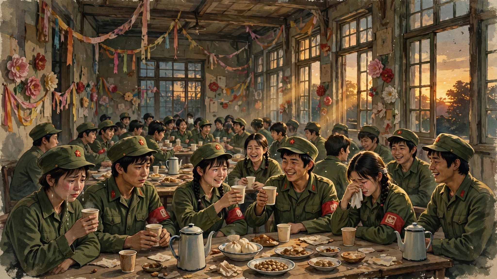
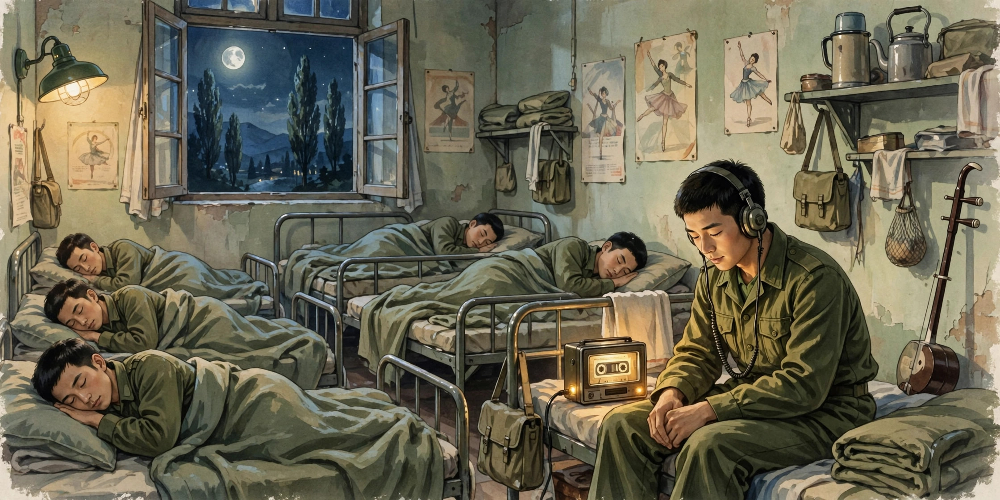

越是朴实无华的东西越是直入人心
欢迎点击上方名片关注我的公众号。你的支持是我坚持原创的最大动力。
蹭热度，贴一篇旧影评（这篇影评写了快8年了，没想到还有翻出来的一天。）
----我是分界线----
2017年的最后一天，一个偶然的机会，临时决定去电影院看《芳华》。之前看过一些影评的标题，似乎影评界对这部片的批评多过赞誉（尽管豆瓣评分较高）。当时也不以为意，但也没有十分想看的冲动。
从电影院出来，外面阳光灿烂，突然有种不真实感。人过四十，背负着家庭重担，健康也出现了一些小问题，这才真正意识到，长着一张娃娃脸不代表就可以永远青春下去。芳华如同岁月一样，是注定要逝去的东西。
讲回电影，先说结论，我认为这部电影是一部朴实而直入人心的作品，是冯小刚作品中数一数二的佳作（另一部值得一提的是《集结号》）。说是怀旧情结也好，说是对青春的追忆也罢，这都只是表象的东西。其实，这部电影是尽了最大努力去淡化历史背景的，即便是作为宣传噱头的战争场面也只有区区几分钟（我相信不是冯导差钱才这样安排）。而电影的主要情节放在现代中国的哪个年代都很自然，因为故事反映的无非是真善美和假恶丑，人性的两面而已。
但是，这部电影也不是那么地苦大仇深，也没多少深刻批判。所谓的善恶也不过是普通人的不同表现而已。由于出身、经历的不同，有的人自私、卑劣，有的人无私、善良。这两类人在我们的生活中比比皆是。所以从技术的角度而言，这部电影的戏剧冲突并不十分激烈。这也是我所说的朴实。对比当今影视界越来越戏剧化、夸张化的剧情和表演，这种（甚至有点复古的）朴实风格可谓一股清流。
随便分析下剧中的几个主要人物就知道他们有多普通多常见。
故事的讲述者萧穗子，虽然有个清奇脱俗的名字，但其个性最具大众性，即不欺凌作恶，也不嫉恶如仇，多数时候立场随大流或从众。这类人是不是你我日常见到的最多的人？
林丁丁，剧中的表现很多人称为“绿茶婊“，温和一点的说她“半是残忍半天真”。我认为，林丁丁的个性不过是普通人的”自私“一面放大了而已。但也到此为止，不见得有多么罪大恶极。拿她在剧中的两次“恶”来说，都不是她起的头，她都不过是反击。只是反击得一次比一次狠，不顾后果罢了。第一次是何小苹偷拿她的军装去照相，虽然何的动机是善的（慰藉冤狱中的老爸），但做法肯定是错的，因为偷窃在任何价值观体系下都是不可取的。所以林丁丁的反应也不算过分，甚至还算留了点情面（有人说要告诉政委，是林丁丁说算了）。第二次，刘峰表白后失态抱了林，恰好被好事的同事撞到。这次的事关系到林的切身利益（可能落下“腐蚀活雷锋”的话柄，进而影响前途），所以林选择了最大程度的反击——把刘峰彻底搞臭。这种事情搁在现在，估计就不算个事。但在当时的政治背景下，在文工团这个特殊的群体中，“作风”可是天大的问题。所以很自然的，自私一面高过常人的林选择了”你死好过我死“的解决方案。可以说，这事刘峰也是要负很大责任的，在当时的背景下，以他的智商，他完全应该预料到这么做的风险和后果，但他却没控制住自己的精虫上脑。说句难听的，有点”作死“。当然爱情面前，人人昏头，对于青春的过失我们这些旁观者也不应过于苛责。
至于陈灿和郝淑雯这一对”门当户对“的官二代，其性格也符合他们的出身经历。此类人从小混迹于精英圈子，择偶眼光实际，不为荷尔蒙所左右，他们是注定要找同一个圈子的人过日子的。从利益最大化的“理性思维”而言，他们比刘峰和萧穗子们要”成熟“多了。其实这说到底也是人性的“自私”一面，只不过这种自私表现得不如林丁丁那种露骨和张扬罢了。
之所以说这部电影直入人心，则是因为它触及到了人心最柔软的部分，情感。无论是爱情（刘峰对林丁丁、萧穗子对陈灿）、同情（刘峰对被众人孤立的何小苹以及何小苹对遭遇不公对待后的刘峰），还是战友情（文工团告别宴上的一幕令人唏嘘），这些都是人性中真善美的部分。虽然生活是残酷的，善良者经常不被善待，甚至落得凄凉的结局。但美好的感情总是给人以希望，给人以向上的力量。

影片对情感的刻画十分到位。例如，刘峰听邓丽君的歌，说歌里的每个字都是都是他心里的话。他是如此沉醉在爱情中（即使后来证明这只是他的单恋），以致听首歌就能触景生情，无法自拔（题外话，邓丽君的歌声的确是少有地治愈，可以说当今这种歌声几乎绝迹了）。每个有恋爱经历的人，都能够对刘峰这种自然的感情流露感同身受。萧穗子为心爱的人愿意奉献物质上宝贵和精神上重要的东西（如金项链），甚至不顾少女的矜持，为爱人写情书和诗。当得知爱人选择了别人，她没有纠缠和流连，而是果断地撕信断痴情。这份纯真的爱，也足以令人动容。至于刘峰和何小苹之间的感情，虽然有人将它理解为爱情，但我觉得它更像是同是天涯沦落人的同情，哪怕到了后期，也不过是发展到了亲情。当然，这种感情也很美好。爱情并不是人生的全部，亲情才是伴随我们最久的。

要说缺点和遗憾的地方，应该是不知什么原因剪掉的两场戏。第一场，何小苹的草原小英雄独舞，貌似剪掉不影响剧情，但其被删有点莫名其妙。仔细分析一下，前面何小苹在文工团无端遭遇众人孤立、欺凌，但坚强的她没有选择向命运屈服，而是勤学苦练。哪怕出一身臭汗遭人嫌弃也在所不惜。高原上的独舞正是展示她努力结果的关键情节，是何小苹人物塑造不可缺失的一个环节。这样，“轻伤不下火线”而且献上精彩表演的她演出后即被调到前线，更能顺理成章地突出人物的悲剧命运。第二场是批斗刘峰，这场戏被删很可能是因为揭示了当时的时代大环境，倒是可以理解。但是，这么一删大大地弱化了人性善恶的对比，从整体上降低了影片的现实批判意义。如果这两场戏不删，我是可以给这部影片打满分的。
总之，朴实无华，直入人心，是《芳华》打动我的主要原因。至于有些人纠结的年代情结、怀旧情结、战争情结什么的，我觉得这并非原作者乃至导演原本想要传达的信息。影片想要传达的主要信息，我想无非是，珍惜每一份宝贵的情感，善待所有值得被善待的人。